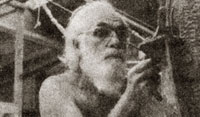

In celebration of little-known MOTHER-type folks from all over.
Back in the '20's, Canadian sculptor Randolph W. Johnston coined a word-Megamachine-to describe a society that swallowed people up and excreted them as look-alike pellets. And it was back then that the young sculptor conjured a dream of being able to leave the Megamachine to live in freedom, alone, on a tropical island.
As it turned out, that dream eventually materialized . . . but only after periods of hardship and hunger, rejection of Johnston's work, and the death of his wife (which left him alone with a tiny daughter).
It wasn't until the early '50's that Johnston-accompanied by his second wife, Margot (a ceramist), and three little boyswent off to find his long-dreamed-of island in the Abaco group of the Bahamas (at the time, a remote and difficult-to-reach hardship post). To make the move, Johnston left behind a studio and an assistant professorship in art at Smith College in Massachusetts . . . and a growing reputation as an artist (Ran's "Five That Escaped" was bought by the University of Nebraska and was featured in Life magazine).
Hard luck followed close on the Johnstons' heels. Margot and the boys came down with polio, and it was years before Margot regained full use of her arms and legs. The family lived hand to mouth in this period: their art was rejected, and their property-which they'd bravely put up for sale-remained at home, unsold.
In time, however, the Johnstons scraped together enough cash to buy an Abaco schooner, which served as their home while they cruised in search of a source of income and an island home. Eventually, the family had to be moved ashore to live in a cave so that Ran could farm the only cash crop possible: tourists who'd pay for a week's cruise.
Hurricanes, sand fleas, and other island conditions conspired against the Johnstons as they lived on a diet of fish, sweet potatoes, bananas, and coconuts (all the food they could scrounge from the cruel Bahamian coast). Although he ached to get back to his art, Ran built-stone by stone-a home and cistern for his family. Only afterwards did the artist (who was without materials, foundry, or studio) agree to create a sculpture for a passing yachtsman.
Today, Johnston-a peaceable, bearded, barefoot, 72-year-old vegetarian-lives on the island he dreamed of for so long . . . and, he's finally achieved new recognition as an artist. (His "Afro-Bahamian Woman" was unveiled on Rawson Square in Nassau last year, and this year he has seen the publication of his book-Artist on His Island-by Noyes Press, Mill Rd., Park Ridge, N.J. 07656.) Margot has returned to ceramics, two sons have left the island (one as a journalist, the other as an electrician), and the youngest son-Peter-assists his father in smelting in addition to creating bronzes of his own.
Yes, bronzes: Randolph Johnston is one of a handful of sculptors alive today who take their own works from model all the way to finished bronze. Despite the fact that his studio-home at Little Harbor can only be reached by boat, Ran brings in his own ores, e-ngineers his own castings, designs and builds his own furnaces, smelts his own metals, and pours, polishes, and ships completed works out across a sand bar that keeps away boats drawing more than six feet.
Artist, writer, engineer, metallurgist, farmer, seaman, architect, stonemason, dreamer, doer, Ran Johnston is truly a compleat Renaissance man . . . tropical island style.
J.R. McHone of Charlotte, North Carolina calls himself a "ten thumbs city boy" and swears he'd never be capable of writing a "how to" article for THE Mother Earth News or any other publication because-as he puts it-"I don't know how to do anything." But he's wrong. McHone is as much a doer-and is making as positive a contribution to the environmental cause-as any homesteader or ecology activist today.
J.R. is a scriptwriter for a cassette recording company called Visioneers, Inc. And as such, he's the moving force behind a new series of ecology-oriented listening adventures for children entitled (are you ready for this?) "Laser Lads".
Reminiscent of Tom Swift-and as high in adventure as any children's classic-"Laser Lads" deals with the exploits of two young geniuses on assignment for "SECOS: Scientific Ecological Explorations, Unlimited". Each story is performed by a group of professional actors, and features dramatic sound effects along with original music.
"One purpose of the tapes beyond their obvious educational slant," says McHone, "is to reawaken the powers of young imaginations . . . to teach children to 'see' with their ears and minds, just as millions of Americans used to do during radio's Golden Age." And the series does just that. In fact, most folks agree that "Laser Lads" is far more exciting than any four of today's television "kid shows" put together. But more important, says McHone, is the very nature of the taped stories.
"We call it 'adventure without violence'," McHone explains. "You won't find a single villain, fist fight, gun shot, or murder in any of the `Lads' exploits. The drama comes by way of conflicts with the elements, `dangerous' wild animals, and/or well-meaning but misled individuals. And we try very hard to develop our plots within a strong ecological or energy-conscious framework."
Three of McHone's first ten "Laser Lads" scripts, for instance, center around SECOS' efforts to save endangered species. And a scene in "The Missing Robot" features the boys' invention of a "sonic washer" which they hope will eventually eliminate any need for detergents. One cliffhanger episode involves a study of "pyramid power" as part of SECOS' neverending research into new energy forms. And the series' two heroes always do their traveling in vehicleseither a helicopter/glider called "The Silver Eagle", or a fantastic hydrofoil/yacht/submarine-which are powered by solar-cell batteries.
"Laser Lads" also teaches its young listeners (ages 6-12) to respect all life forms on earth ("The most basic and important ecology lesson of all," remarks McHone). In one seagoing saga, the boys cut their engines and gently "drift" up to a school of dolphins so they won't frighten the creatures. And in "Zoo Story"-an adventure which takes the "Lads" to a desert in Arizona-the youngsters leave their small plant/mascot home because they don't want to expose it to the Southwest's harsh climate.
"I have to admit that we've been a bit devious in our approach," says McHone with a grin. "The 'messages' we try to get across are very carefully cloaked in adventure, suspense, and humor. But the end result is worth it: The kids who listen to `Laser Lads' really do become more aware of environmental and ecological problems, and they don't have to put up with the usual sermonizing in the process. You might call it `painless education'."
You might indeed. "Laser Lads"-a combination of Captain Video without the video, high adventure without the violence, and constructive learning experience without the blackboards and textbooks-may well lead the way to an entirely new trend in educational media. And you can bet that J.R. McHone-a kind of latter-day "laser lad" himself-will be in the thick of it all.
Know someone-sung or unsung-who's doing something of merit in wholistic gardening, alternative energy, conservation, selfemployment, lowcost house construction, or any other field of endeavor featured in MOTHER? A fact-filled, 450- to 500-word essay describing that person and a sharp, glossy, black-and-white photo can-upon acceptance for use in PROFILES-earn you a fast, flat $50. Send your contribution to: PROFILES Editor, THE Mother Earth News, P.O. Box 70, Hendersonville, N.C. 28739.
|
|
 |
|